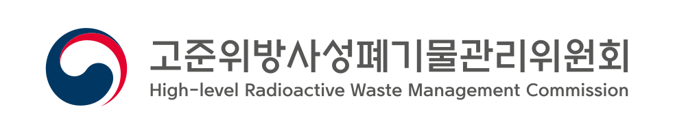

AI가 바꾼 보훈심사 현장
BOSIM Lab 실증 케이스 기반 · 실제 업무 적용 완료
실무 적용 케이스
25
+10 this month
평균 효율 개선
83%
시간 절감 기준
AI 인식 점수
4.2
3월 2.8 → 현재
참여 기관
4
보훈심사위 + 타부처 3곳
업무별 AI 적용 효과 — 처리시간(분) 전/후 비교
Before (AI 미적용)
After (AI 적용)
Casebook
25 cases · BOSIM Lab 실증 케이스 기반 · 실제 업무 적용 완료
⭐ 실증 케이스
-83%
ZIP 다중 중첩 파일 자동 해제 & 일괄 인쇄
심사 문서가 ZIP 중첩 구조로 압축되어 수동 해제 시 최대 800페이지 분량 처리 필요. Claude Code 기반 BASH 스크립트로 자동화했습니다.
⭐ 실증 케이스
-83%
출퇴근 유연근무 신청 사유 AI 초안 작성
유연근무 신청 시 사유 문구를 매번 새로 작성하는 부담. ChatGPT 개인 계정으로 비식별 지침을 따라 공문체 초안을 생성합니다.
요건심의
-45%
이의신청 검토 AI 보조
기각 이의신청 건의 쟁점을 AI로 요약하고 유사 판례를 자동 매칭하여 검토 시간 단축
공통
-67%
유사 판례 검색 프롬프트
과거 심사 결정문에서 유사 사례를 AI로 5초 내 검색하는 맞춤 프롬프트 개발
부양심의
-61%
심사자료 요약 자동화
부양 관련 제출 서류를 AI로 핵심 쟁점 3줄 요약하여 심사 준비 시간 대폭 단축
이의신청
-60%
이의신청 쟁점 자동 분류
이의신청서에서 핵심 쟁점을 AI로 자동 추출하고 유형별 분류하여 심사 효율화
공통
-38%
회의록 자동 요약 시스템
심사위원회 회의 내용을 AI로 핵심 결정사항 중심으로 자동 요약 및 정리
요건심의
-52%
요건 검토 체크리스트 생성
유공자 요건 심의 시 필수 확인 항목을 AI로 자동 생성하여 누락 방지
부양심의
-48%
부양 요건 법령 비교표 생성
부양 관련 법령 조항을 AI로 비교·정리하여 조문 간 차이점을 표로 자동 생성
요건심의
-55%
상이등급 판정 근거 정리
상이등급 재판정 시 의학적 소견과 법적 기준을 AI로 대조하여 판정 근거 문서 작성
공통
-43%
민원 답변서 초안 작성
반복되는 민원 유형별로 AI가 법적 근거를 포함한 답변서 초안을 자동 생성
이의신청
-50%
이의신청 기각 사유서 작성
기각 결정 시 법적 근거와 판례를 AI로 정리하여 사유서 초안 자동 생성
부양심의
-44%
소득 증빙 자료 교차 검증
부양 심의용 소득 자료 여러 건을 AI로 교차 대조하여 불일치 항목 자동 탐지
요건심의
-40%
참전 기간 산정 보조
참전유공자 요건 중 복무·파병 기간을 AI로 계산하고 관련 법령 조건 충족 여부 확인
공통
-56%
법령 개정 비교 분석
보훈 관련 법령 개정 시 신·구 조문 비교표를 AI로 자동 생성하고 실무 영향 분석
이의신청
-47%
이의신청 접수 요건 사전 검토
이의신청 접수 단계에서 AI가 보정 필요 사항과 요건 충족 여부를 사전 점검
부양심의
-39%
부양 대상 가족관계 분석
복잡한 가족관계증명서를 AI로 분석하여 부양 대상 적격 여부를 구조화된 표로 정리
요건심의
-58%
공상 인과관계 검토 보조
공무상 상이 인정 시 근무환경과 상이의 인과관계를 AI로 분석하여 논리 구조화
공통
-35%
주간 업무 보고서 자동화
주간 심사 실적 데이터를 AI로 분석하여 보고서 초안과 주요 이슈를 자동 정리
이의신청
-53%
재심사 결정문 초안 작성
이의 인용 시 재심사 결정문의 법적 근거와 결론을 AI가 초안으로 작성
부양심의
-42%
부양 심의 결정문 작성 보조
부양 심의 결과를 법적 형식에 맞춰 AI가 결정문 초안 작성, 심사관이 검토·확정
요건심의
-46%
진단서·소견서 핵심 추출
의료 진단서와 소견서에서 상이등급 판정에 필요한 핵심 의학적 소견을 AI로 추출
공통
-41%
교육자료 슬라이드 생성
내부 교육용 법령·절차 안내 슬라이드 구성안을 AI로 자동 생성하여 교육 준비 단축
이의신청
-49%
이의신청 통계 분석 보고
월별·유형별 이의신청 통계를 AI로 분석하여 추세와 이슈 포인트를 자동 리포트
요건심의
-51%
보훈보상 대상 적격 심사 보조
보훈보상 대상자 요건을 AI로 법령 기준과 대조·판단 근거를 체계적으로 정리
외부 협력 네트워크
BOSIM Lab은 보훈심사위원회 내부를 넘어 타부처·외부 전문기관과 함께 합니다
기후에너지환경부
이미정 (4급) · AI 보안 표준화 협업
보안 가이드라인 공동 제작
보안 가이드라인 공동 제작
한전 KDN
이창열 (보안사업단장) · 기술 멘토링
시스템 최적화 전문 자문
시스템 최적화 전문 자문

고준위방사성폐기물관리위원회
정민구 사무관 · 외부 협업
기술수용모델 기반 실증
기술수용모델 기반 실증